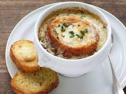

Lentil Soup

Ingredients:
- 1 cup red lentils
- 1 onion (finely chopped)
- 1 carrot (grated)
- 1 potato (grated)
- 2 tablespoons butter
- 1 tablespoon tomato paste
- 1 teaspoon red pepper flakes
- 1 teaspoon black pepper
- 1 tablespoon salt
- 8 cups water
- Rinse and drain the lentils.
- Melt butter in a pot, add the onion and sauté until golden brown.
- Add grated carrot and potato, cook for 5 minutes over low heat, stirring occasionally.
- Add tomato paste, red pepper flakes, black pepper, and salt. Stir well.
- Add lentils, pour in the water, and bring to a boil.
- Once boiling, simmer over low heat for about 25-30 minutes until the lentils are well-cooked.
- Blend the soup after it's cooked and serve. You can melt and add butter on top if desired. Enjoy your meal!
Tomato Soup
Ingredients:
- 1 tablespoon butter
- 2 teacups hot milk
- 5 large tomatoes
- 2 tablespoons flour
- 4 cups hot beef broth
- 2 teaspoons salt
- Melt the butter in a pan.
- Add flour and cook over low heat until it releases its aroma.
- Add grated tomatoes to the cooked flour mixture and cook for 5 minutes.
- Add hot beef broth and salt. To prevent curdling, add hot milk heated in a small saucepan little by little, stirring quickly.
- Boil the soup over medium heat, then simmer on low heat for 15 minutes.
- Blend for a smoother consistency.
- Serve the soup in bowls, topped with grated cheddar cheese while hot. Enjoy your meal!
Chicken Soup
Ingredients:
- 1 chicken breast (boiled, shredded)
- 1 cup boiled rice
- 1 onion (finely chopped)
- 2 carrots (grated)
- 1 potato (grated)
- 1 tablespoon butter
- 2 tablespoons flour
- 8 cups chicken broth (obtained from boiling the chicken)
- 1 cup milk
- 1 teaspoon salt
- 1 teaspoon black pepper
- Half a bunch of fresh parsley (chopped)
- Melt butter in a pot, add the onion and sauté until golden brown.
- Add grated carrot and potato, cook for 5 minutes over low heat, stirring occasionally.
- Add flour and continue to sauté.
- Add chicken broth and milk, stir.
- Add shredded chicken breast and boiled rice, add salt and black pepper and stir.
- After the soup starts to boil, simmer over low heat for 15-20 minutes.
- Before serving, add chopped fresh parsley. Serve hot. Enjoy your meal!
French Onion Soup

Ingredients:
- 4 medium-sized onions (yellow or white, thinly sliced)
- 2 tablespoons butter
- 2 tablespoons flour
- 1 cup white wine
- 1.5 liters chicken or vegetable broth
- 1 teaspoon salt
- 1 teaspoon black pepper
- 4 slices stale bread
- 1 cup grated Gruyere cheese
- Melt butter in a pot, add onions and sauté until soft.
- Add flour and stir, then add white wine and stir. Add chicken or vegetable broth.
- Add salt and pepper, bring to a boil, then simmer over low heat for 20-25 minutes.
- Place sliced bread on a baking sheet, sprinkle grated Gruyere cheese on top.
- Distribute the soup into bowls, place the bread and cheese plates on top.
- Cover the soups with foil and grill until the cheese melts, about 3 minutes.
- Serve hot. Enjoy your meal!
Italian Minestrone Soup
Ingredients:
- 2 tablespoons olive oil
- 1 onion (chopped)
- 2 cloves garlic (crushed)
- 2 carrots (chopped)
- 2 zucchinis (chopped)
- 1 cup cooked red lentils
- 1 cup chopped green beans
- 1 cup chopped celery
- 1 cup chopped spinach
- 1 cup chopped beetroot
- 1 cup chopped tomatoes
- 8 cups vegetable broth
- 1 teaspoon salt
- 1 teaspoon black pepper
- 1 teaspoon red pepper flakes (optional)
- Half a cup thinly sliced fresh basil
- Heat olive oil in a pot, add onion and garlic, and sauté until softened.
- Add carrots, zucchinis, lentils, green beans, celery, spinach, beetroot, tomatoes, and stir.
- Add vegetable broth, bring to a boil, then simmer over low heat for 20-25 minutes.
- Add salt, black pepper, and optional red pepper flakes.
- Add sliced basil and stir, then serve hot. Enjoy your meal!